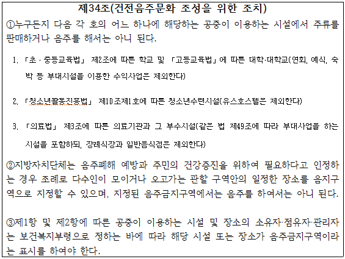
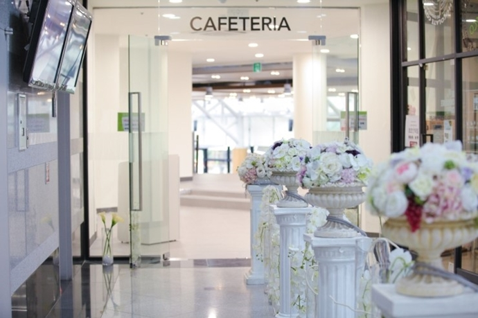
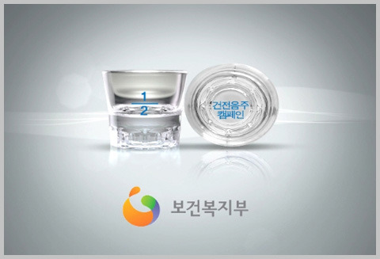

'대학교 내에서 음주 행위는 금지되었는가?'
-국민건강증진법 전부개정법률안을 통해 바라본 대학교 캠퍼스 내 음주행위 금지-
□ 대학교 캠퍼스 내 음주 금지 논란 확산

예전부터 대학교에서 일어나는 사건들 중에서는 음주와 관련된 여러 사건 사고가 많이 일어났습니다. 신입생 환영회, MT, 축제 등 학교 행사가 진행될 때마다 음주 문화에 대해서 많은 이야기들이 나왔습니다. 올해에는 모 대학에서 신입생환영회에서 약 1200만원을 주류 구매가 이루어졌다는 것이 사회적으로 이슈가 되기도 하였습니다.
이와 같은 음주문화에 대한 걱정으로 2012년 9월, 보건복지부에서는 「국민건강증진법 전부개정법률안」으로 제34조(건전음주문화 조성을 위한 조치)를 입법예고하였습니다. 그리고 이 개정안을 2013년 4월부터 적용한다는 소식이 전해들려지는 것입니다. 이에 대해서 여러 찬반 논쟁이 이루어졌고 교내 학우들도 많은 관심을 가지고 있었습니다.
그런데도 지금 우리는 아직도 교내에서 종종 술을 먹고 있는 모습을 찾아볼 수 있었습니다. 그래서 이번에 '건전음주문화 조성을 위한 조치'가 시행되어 우리가 술을 먹는 것이 정말로 금지되어있는 행동인지에 대해 검증해보고자 하였습니다.
□ 법안의 기획과 내용

우선 위와 같은 법안이 입법되려고 하고, 음주에 대해 규제하려고 하는 이유는 명백하였습니다. 건전한 음주문화를 조성하고 공공이 이용하는 장소에서 음주와 주류 판매 행위에 대한 규제를 강화하기 위해서였습니다. 위 링크를 통해 확인해보면, 더 자세히 확인해볼 수 있는데 2012년에 보건복지부에서는 주류 및 음주에 대한 규제를 강화하고 국민건강증진의 내실을 기하여 건강증진정책 수립 및 집행기반을 마련하고자 하였습니다.
그 중에서 음주 제한과 관련된 법안은 제34조~제36조의 내용인데, 최근 높아지는 주취폭력과 공공장소에서의 음주문제와 같은 사회적 문제를 해결해야하는 공감대가 형성되어가고 있기 때문에 법안 제정을 마련하였습니다.
대학교 내에서는 대학이나 학생회 주최의 행사의 ‘주점’이나 ‘장터’에서 주류를 팔 수도, 마실 수도 없게 되는 것입니다. 또한 교내 주류 판매에 대해서는 500만 원, 음주 시에는 10만 원이라는 과태료를 부과할 것이라는 구체적인 방안에 대해서도 고려하였습니다.
이 법안을 조금 더 자세히 확인해보면 학교 캠퍼스 뿐만 아니라 공공장소에 대한 음주 금지 내용도 포함이 되어있는데, 이 시기에 한강에서 맥주를 마실 수 없다는 이야기가 나온 것도 이 법안이 입법예정 되면서 그러한 이야기가 나왔던 것입니다.
□ 사실 확인 결과
결론부터 이야기 하자면, 이는 사실이 아니라고 할 수 있습니다. 이 법안에 대해서는 2012년 입법예고를 하였지만, 여러 논란과 부처간의 이견으로 국회로 넘어가지 못한 채 당시 국회임기가 마감되면서 입법이 진행되지 못했습니다. 또한, 2014년에 보건복지부에서는 음주와 관련된 법안에 대해서 다시 재검토하여 시행한다고 했지만, 여러 논란만을 가진 채 이전과 마찬가지로 시행되지 못하였습니다. (클릭 시 현재 국민건강증진법 확인 가능)
그렇다면, 만약 보건복지부의 개정안이 법제화 된다면 그 때에는 정말로 교내에서 음주가 금지되는걸까요? 이에 대해서 살펴본 결과, 보건복지부에서는 조항에 대해 '대학이 수익사업으로 운영하는 예식·숙박·연회시설 등의 일부 부대시설'에는 술을 팔 수 있다고 예외적으로 분류해두었습니다. 서울대학교의 경우 교내에 4개의 예식장이 있고, '호암교수회관'에서는 숙박시설로도 이용하는 공간이 있어 음주가 가능하다고 해석할 수 있습니다. 또한, 부대시설의 해석에 따라 수익사업을 위한 주류 판매가 가능하다고 해석이 가능하여 교내에서 음주가 충분히 가능하다고 볼 수 있습니다.
즉, 건전음주문화 조성을 위한 조치가 시행된다하더라도 무조건 교내에서 주류 판매와 음주가 금지되는 것은 아니라는 사실을 알 수 있었습니다.
□ 결론

우선적으로 ‘건전음주문화 조성을 위한 조치’는 아직까지 시행되지 않았기에 현재 교내 음주가 불법이라는 점은 거짓이라고 할 수 있습니다. 또한, 예외적 상황에 대한 적용이 교내 음주 금지의 실효성을 해치고, 단속의 효율성 또한 고민해봐야할 문제로 남아있습니다.
그러나 건전한 음주문화 조성과 주취폭력 등과 같은 사회적 문제를 해결하기 위해서는 음주 관련 법안이 필요하고, 음주에 대한 처벌의 법적 근거를 마련할 수 있다는 점에서 음주 관련 법안이 필요하다는 공감대는 여전히 형성되어있기에 추후에는 더 국민을 위한 음주 관련 법안이 발의될 것입니다.